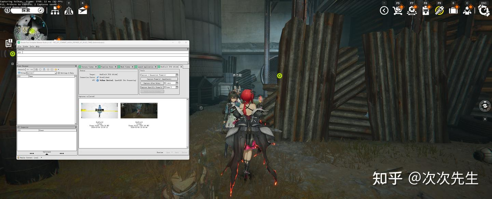
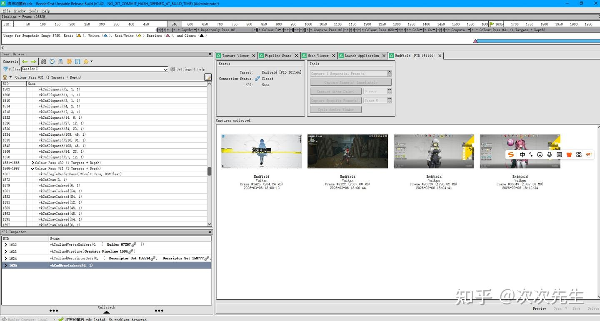
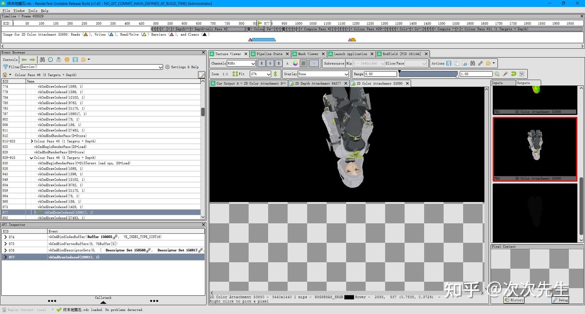
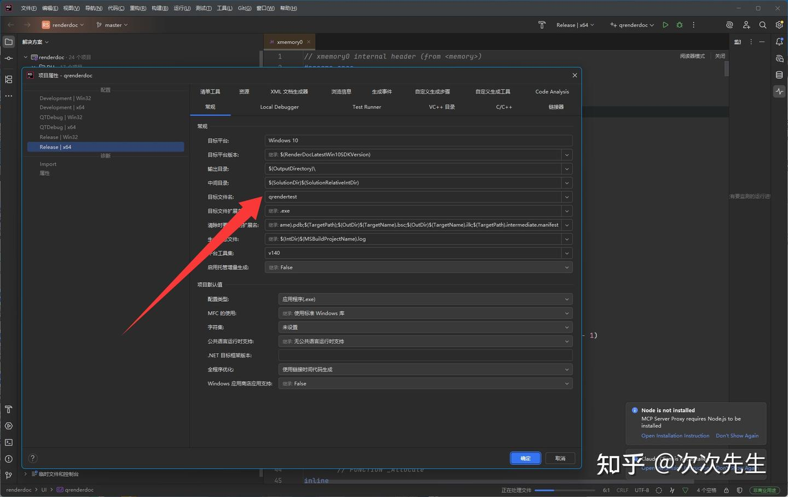

效果展示：



前言：
《终末地》和《鸣潮》都是采用了ACE反作弊和加壳处理，所以我们修改的核心就是要针对ACE进行处理
因为库洛和鹰角官方有人员关注了我,所以稿件可能随时会被和谐
注:本文所提及的方案,请勿用于任何商业用途,自己学习学习就好了(日后要是惹出什么事来,别把师傅拱出去就好了)
RenderDoc架构解析
renderdocui.exe ← UI 启动器 stub（极小，只负责找到并启动 qrendertest.exe）
└── qrenderdoc.exe ← 真正的 Qt UI 主程序（replay 应用）
│
├── renderdoc.dll ← 核心 DLL（注入目标进程，钩住 D3D/GL/Vulkan）
├── renderdoccmd.exe ← 命令行工具（崩溃处理、注入辅助）
└── renderdocshim64.dll ← 全局 Hook Shim DLL（用于全局注入模式）
关键机制：
- renderdocui.exe 是一个 stub，通过 wcscat_s 拼接路径找 qrenderdoc.exe
- renderdoc.dll 加载到 qrenderdoc.exe 后，检查其是否导出 renderdoc__replay__marker 符号来判断自己是否在 replay 环境中（若不是则注入 D3D/GL 钩子，会导致进程导致崩溃）
- 注入游戏时使用 CREATE_SUSPENDED + CreateProcessW 创建挂起进程，注入 DLL 后再恢复
ACE反作弊原理：
测试出来ACE主要通过扫盘和扫进程来检测RenderDoc的字符串和DLL，所以我们的核心工作就是将RenderDoc的所有可检测标识符改名
RenderDoc源码构建：
RenderDoc的工具集是VS2015的v140版本，我用的是VS2022所以需要额外下载v140组件，或者是可以到源码里面手动更新平台工具集
我们的核心思路就是修改RenderDoc的可识别字符和魔数特征码
在这里我用“rendertest”这个名字进行替换，你们可以替换成如何你想要的名字，比如说“TencentAACE”
构建系统
| 文件 | 修改内容 |
|---|---|
| CMakeLists.txt | set(RDOC_BASE_NAME "renderdoc") → "rendertest" |
RDOC_BASE_NAME 是整个 CMake 构建的基础变量，影响所有派生名称（DLL 名、可执行文件名、符号名等
VS 项目文件
| 文件 | 修改项 | 旧值 → 新值 |
|---|---|---|
| renderdoc/renderdoc.vcxproj | RootNamespace、ProjectName | renderdoc → rendertest |
| renderdoccmd/renderdoccmd.vcxproj | RootNamespace、ProjectName | renderdoccmd → rendertestcmd |
| renderdocshim/renderdocshim.vcxproj | RootNamespace + 显式 TargetName | renderdocshim → rendertestshim32/64 |
| qrenderdoc/renderdocui_stub.vcxproj | RootNamespace、ProjectName、PrimaryOutput、TargetName | renderdocui → rendertestui |
| qrenderdoc/renderdocui_stub.vcxproj | 新增 UACExecutionLevel | — → RequireAdministrator |
坑点：renderdocshim.vcxproj 只改 RootNamespace 不够，必须显式设置 <TargetName> 才能改变输出 DLL 名；renderdocui_stub.vcxproj 同理需要显式设置 <PrimaryOutput> 和 <TargetName>
核心 API 头文件
renderdoc/api/replay/renderdoc_replay.h
// 修改前
#define REPLAY_PROGRAM_MARKER() \
extern "C" RENDERDOC_EXPORT_API void RENDERDOC_CC renderdoc__replay__marker() {}
// 修改后
#define REPLAY_PROGRAM_MARKER() \
extern "C" RENDERDOC_EXPORT_API void RENDERDOC_CC rendertest__replay__marker() {}进程创建与注入
renderdoc/os/win32/win32_process.cpp（这里RenderDoc有一段硬编码，所以需要额外注意）
| 位置 | 修改内容 |
|---|---|
| 所有 renderdoccmd.exe 引用 | → rendertestcmd.exe |
| 所有 renderdocshim32/64.dll 引用 | → rendertestshim32/64.dll |
进程注入白名单
renderdoc/os/win32/sys_win32_hooks.cpp
// 防止 RenderDoc 注入自身，需要更新为新名称
if(app.contains("rendertestcmd.exe") || app.contains("qrendertest.exe"))
if(cmd.contains("rendertestcmd.exe") || cmd.contains("qrendertest.exe"))崩溃处理器
renderdoc/core/crash_handler.h
CreateEventA(NULL, TRUE, FALSE, "RENDERTEST_CRASHHANDLE"); // 内核对象名
cmdline += "/rendertestcmd.exe\" crashhandle --pipe "; // 可执行文件路径
StringFormat::Fmt("\\\\.\\pipe\\RenderTestBreakpadServer%llu", ...); // 命名管道
FileIO::GetTempFolderFilename() + "RenderTest\\dumps\\"; // Dump 目录renderdoccmd/renderdoccmd_win32.cpp
CreateEventA(NULL, TRUE, FALSE, "RENDERTEST_CRASHHANDLE");
wc.lpszClassName = L"rendertestcmd";
GetModuleHandleA("rendertest.dll"); // 找核心 DLL文件路径与注册表
renderdoc/os/win32/win32_stringio.cpp
exe = path + "/../qrendertest.exe"; // 查找 UI 可执行文件
RegGetValueW(HKEY_CLASSES_ROOT, L"RenderTest.RDCCapture.1\\DefaultIcon", ...);
wsprintf(filename_start, L"RenderTest\\%ls_...", ...);
ret += "\\rendertest\\" + filename;共享内存与 Shim DLL 名称
renderdocshim/renderdocshim.h
#define GLOBAL_HOOK_DATA_NAME "RenderTestGlobalHookData64"
#define SHIM_DLL_NAME "rendertestshim64.dll"
// (32位同理)Qt UI 层
qrenderdoc/Code/qrenderdoc.cpp
QApplication::translate("qrendertest", ...);
qInfo() << "QRenderTest initialising.";
session.configData().name = "QRenderTest";
parser.setApplicationDescription(tr("Qt UI for RenderTest"));qrenderdoc/Windows/MainWindow.cpp
QString text = prefix + lit("RenderTest ");qrenderdoc/renderdocui_stub.cpp
wcscat_s(curFile, 511, L"qrendertest.exe");其他标识符
| 文件 | 修改内容 |
|---|---|
| renderdoc/driver/gl/wgl_platform.cpp | renderdocGLclass → rendertestGLclass |
| renderdoc/data/renderdoc.rc | FileDescription、InternalName、OriginalFilename、ProductName 全部改为 RenderTest |
| qrenderdoc/Code/pyrenderdoc/PythonContext.cpp | static wchar_t program_name[] = L"qrendertest |
输出文件重命名
在构建属性中，记得更改显式设置<TargetName>和<PrimaryOutput>

用AI来给技术点总结以下就是
| 技术点 | 说明 |
|---|---|
| Replay Marker 机制 | DLL 通过查找宿主进程的导出符号 <basename>__replay__marker 判断是否为 replay 模式，不匹配则注入 GPU 钩子导致崩溃 |
| CREATE_SUSPENDED 注入 | RenderDoc 用挂起方式创建目标进程，注入 DLL 后再恢复，这要求 launcher 有不低于目标进程的权限 |
| Named Kernel Objects | 命名事件、命名管道、共享内存的名称都是进程间协议的一部分，必须一致 |
| UAC Manifest | .vcxproj 的 <UACExecutionLevel>RequireAdministrator</UACExecutionLevel> 等同于在清单中写 requestedExecutionLevel level="requireAdministrator" |
| vcxproj 输出名控制 | 实际输出文件名 = $(TargetName)$(TargetExt)，改 RootNamespace 不影响输出名 |
| CMake RDOC_BASE_NAME | 该变量通过预处理器宏 STRINGIZE(RDOC_BASE_NAME) 传入 C++ 代码，影响运行时字符串拼接逻辑 |